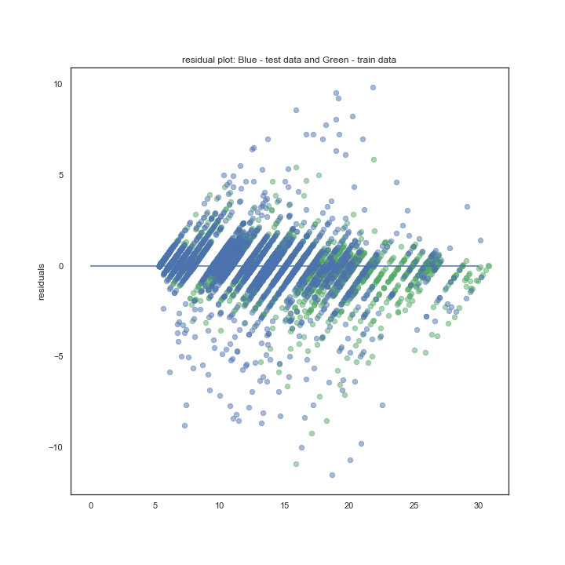

First, we use LASSOCV for Feature Selection purposes to determine the most important columns in our dataset. The feature selection plots with coefficients and scores are given below:
Next, we attempt to predict Interest Rate with the help of two models namely RandomForestRegressor and Linear Regression. For RandomForestRegressor. We perform train, test split and after training our model, we test it on our test dataset to see it acheives an Accuracy = 96.81% on train data and Accuracy = 92.24% on test data. We plot residual plot below to see the best fit of data.
Next, we use Linear Regression and do the same steps as before and it acheives an Accuracy = 76.97% on train data and Accuracy = 76.58% on test data. We again plot residual plot below to see the best fit of data.